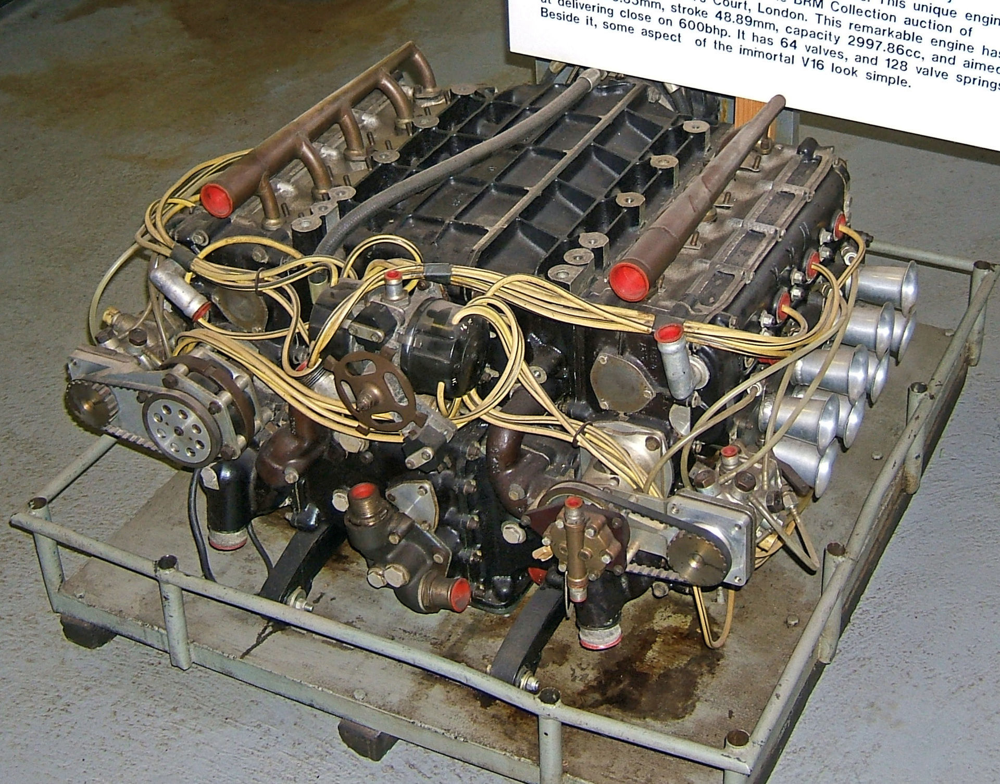
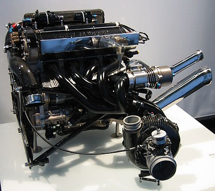
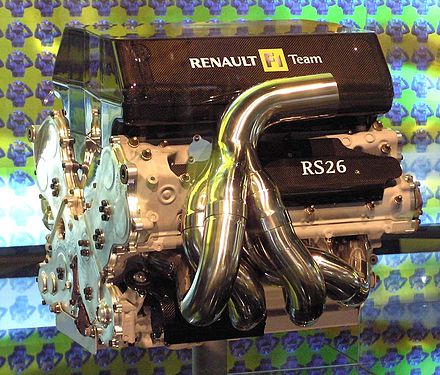
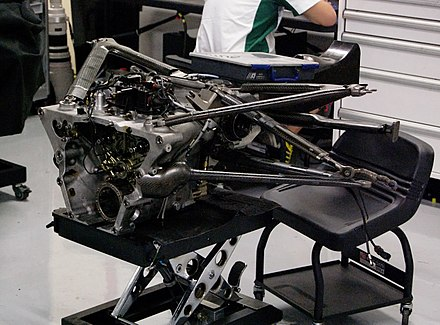
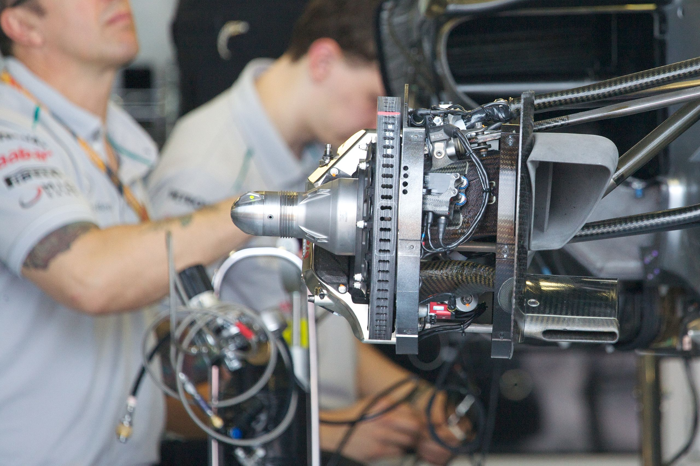
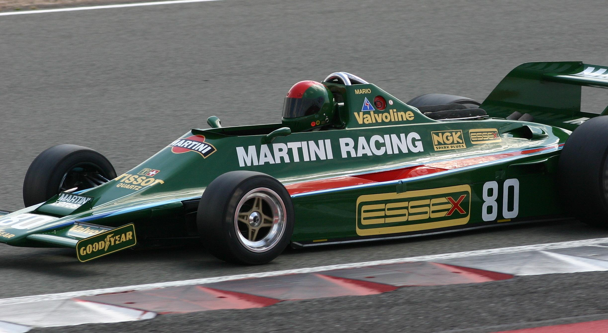

A Formula One car is a single-seat, open cockpit, open-wheel racing car with substantial front and rear wings,
and an engine positioned behind the driver, intended to be used in competition at Formula One racing events.
The regulations governing the cars are unique to the championship.
The Formula One regulations specify that cars must be constructed by the racing teams themselves,
though the design and manufacture can be outsourced.
Engines
For a decade, F1 cars had run with 3.0-litre naturally aspirated engines with all teams settling on a V10
layout by the end of the period; however, development had led to these engines producing between 730 and 750 kW
(980 and 1,000 hp),and the cars reaching top speeds of 375 km/h (233 mph) (Jacques Villeneuve with Sauber-Ferrari)
on the Monza circuit.[citation needed] Teams started to use exotic alloys in the late 1990s, leading to the FIA
banning the use of exotic materials in engine construction, with only aluminium, titanium and iron alloys being
allowed for the pistons, cylinders, connecting rods and crankshafts.The FIA has continually enforced material
and design restrictions to limit power. Even with the restrictions, the V10s in the 2005 season were reputed to
develop 730 kW (980 hp), power levels not seen since the ban on turbo-charged engines in 1989.
Formula One entered its second turbocharged era in 2014. Australia was the location of the end of
the first era (Adelaide 1988) and start of the second (Melbourne 2014). The series is being run under the most
radical engine regulation changes since 1995. All cars entering any Formula One championship race must run
with 1.6-litre single turbocharged 6-cylinder engines with a rev limit of 15,000 rpm and maximum fuel flow
of 100 kg/hr. New car regulations will also be enforced, and the minimum weight regulations will be raised
from 642 kg (1,415 lb) to 690 kg (1,521 lb). Ferrari, Mercedes and Renault produced engines from 2014 with
Honda producing engines from 2015; Cosworth did not participate from 2014 and beyond. In-season engine development
returned; the previous V8's development was frozen. The new turbo engines produce 600 bhp (the previous V8s produce
approximately 750 hp); but the new Energy Recovery System (ERS) will be twice as powerful as the current KERS
system; this new ERS system will give the drivers up to the equivalent of 160 hp when activated; the current
KERS gives cars an extra 80 hp when activated.
Since the start of the 2014 season, the Mercedes team and their drivers Lewis Hamilton, Nico Rosberg and Valtteri Bottas
have dominated the sport, winning 85 of the 116 races (60 for Hamilton, 20 for Rosberg and 5 for Bottas).
This astounding and historic winning streak has been the result of Mercedes development of the "split turbocharger",
a system in which the compressor and turbine components of the turbo charger are placed at separate sides of the engine
and connected by a rod running through the V of the engine. This new technology gave Mercedes and their customer teams
many advantages over their competitors due to the need for less cooling and a more compact power unit. The only other
drivers to win races during this period are Daniel Ricciardo (7) and Max Verstappen (7) of Red Bull, along with Sebastian
Vettel (13), Kimi Räikkönen (1) and Charles Leclerc (3) of Ferrari. On top of this Mercedes have won the drivers' championship
from 2014-2018 (4 for Hamilton and 1 for Rosberg) and have taken the constructors' title from 2014-2018, although since the
rule changes in car design implemented in 2017, Ferrari have been in a position to fight for both the drivers'
and constructors' championship with Vettel coming second in both 2017 and 2018.


In 2012, the engines consumed around 450 l (16 cu ft) of air per second (at the 2012
rev limit of 18,000 rpm);race fuel consumption rate was normally around 75 l/100 km (3.8 mpg‑imp; 3.1 mpg‑US).
All cars have the engine located between the driver and the rear axle. The engines are a stressed member in most cars, mean
ing that the engine is part of the structural support framework, being bolted to the cockpit at the front end, and transmission
and rear suspension at the back end. As of the 2014 season, all F1 cars have been equipped with turbocharged 1.6-litre V6 engi
nes. Turbochargers had previously been banned since 1988. This change may give an improvement of up to 29% fuel efficiency. One
of the many reasons that Mercedes dominated the season early, was due to the placement of the turbocharger's compressor at one
side of the engine, and the turbine at the other; both were then linked by a shaft travelling through the vee of the engine.
The benefit is that air is not traveling through as much pipework, in turn reducing turbo lag and increases efficiency of the car.
In addition, it means that the air moving through the compressor is much cooler as it is further away from the hot turbine section.

small Changes
In the 2004 championship, engines were required to last a full race weekend. For the 2005 championship,
they were required to last two full race weekends and if a team changes an engine between the two races, th
ey incur a penalty of 10 grid positions. In 2007, this rule was altered slightly and an engine only had to l
ast for Saturday and Sunday running. This was to promote Friday running. In the 2008 season, engines were re
quired to last two full race weekends; the same regulation as the 2006 season. However, for the 2009 season,
each driver is allowed to use a maximum of 8 engines over the season, meaning that a couple of engines have
to last three race weekends. This method of limiting engine costs also increases the importance of tactics,
since the teams have to choose which races to have a new or an already-used engine.
Transmission
A modern F1 clutch is a multi-plate carbon design with a diameter of less than 100 mm (3.9 in),[12] weighing
less than 1 kg (2.2 lb) and handling around 540 kW (720 hp).[5] As of the 2009 race season, all teams are using
seamless shift transmissions, which allow almost instantaneous changing of gears with minimum loss of drive. Shift
times for Formula One cars are in the region of 0.05 seconds.[13] In order to keep costs low in Formula One, gearboxes
must last five consecutive events and since 2015, gearbox ratios will be fixed for each season (for 2014 they could
be changed only once). Changing a gearbox before the allowed time will cause a penalty of five places drop on the
starting grid for the first event that the new gearbox is used.


Aerodynamics

Aerodynamics have become key to success in the sport and teams spend tens of millions
of dollars on research and development in the field each year.
The aerodynamic designer has two primary concerns: the creation of downforce, to help push the car's
tyres onto the track and improve cornering forces; and minimising the drag that gets caused by
turbulence and acts to slow the car down.
Several teams started to experiment with the now familiar wings in the late 1960s. Race car wings
operate on the same principle as aircraft wings, but are configured to cause a downward force rather
than an upward one. A modern Formula One car is capable of developing 6 G's of lateral cornering force
thanks to aerodynamic downforce. The aerodynamic downforce allowing this, is typically greater than
the weight of the car. That means that, theoretically, at high speeds they could drive on the upside
down surface of a suitable structure; e.g. on the ceiling.